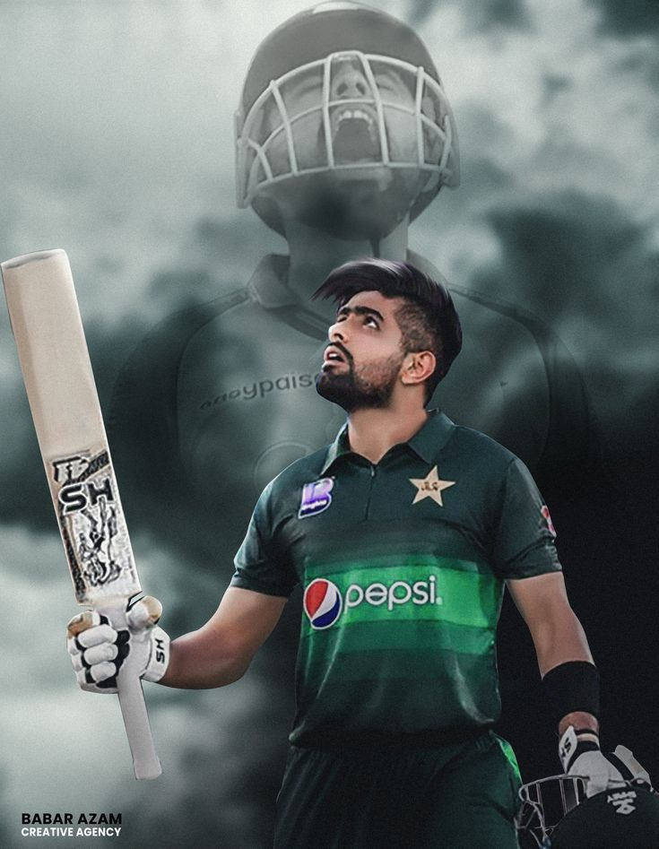

Imran Khan
Imran Ahmed Khan Niazi HI(M) PP (Urdu: عمران احمد خان نیازی; born 25 November 1952) is a Pakistani politician and former cricket captain who served as the 22nd Prime Minister of Pakistan from August 2018 until April 2022. He is the founder and chairman of the political party Pakistan Tehreek-e-Insaf (PTI).Imran Ahmed Khan Niazi HI(M) PP (Urdu: عمران احمد خان نیازی; born 25 November 1952) is a Pakistani politician and former cricket captain who served as the 22nd Prime Minister of Pakistan from August 2018 until April 2022. He is the founder and chairman of the political party Pakistan Tehreek-e-Insaf (PTI).
View details »

Babar Azam
Mohammad Babar Azam (Urdu, Punjabi: محمد بابر اعظم; born 15 October 1994), is a Pakistani international cricketer and captain of the Pakistan national cricket team in all formats.[3][4][5] Regarded as one of the finest batters in contemporary world cricket,[6][7] he is the only cricketer in the world to be in the top five rankings across all formats. He is ranked as the number one batter in ODIs, 5th in Tests and 4th in T20Is.[8] A right-handed top-order batter, he plays for and captains Peshawar Zalmi in the PSL and Central Punjab in domestic cricket of Pakistan.[9] With 42 wins, he is the joint most successful T20I captain of all time.[10]
Azam's maiden T20 century of 122 which he scored against South Africa is the highest current individual score by a Pakistani in the format. Azam was a member of the Pakistan team that won the 2017 ICC Champions Trophy.
View details »

Quaid e Azam
Muhammad Ali Jinnah (Urdu pronunciation: [moɦəmːəd̪ əliː d͡ʒɪnːɑːɦ], Gujarati pronunciation: [məɦ(ə)məd̪ əli d͡ʒʱiɽ̃ɑ]; born Mahomedali Jinnahbhai; 25 December 1876 – 11 September 1948) was a barrister, politician and the founder of Pakistan.[1] Jinnah served as the leader of the All-India Muslim League from 1913 until the inception of Pakistan on 14 August 1947, and then as the Dominion of Pakistan's first governor-general until his death. He is revered in Pakistan as the Quaid-e-Azam ("Great Leader") and Baba-e-Qaum ("Father of the Nation"). His birthday is observed as a national holiday in Pakistan.
View details »